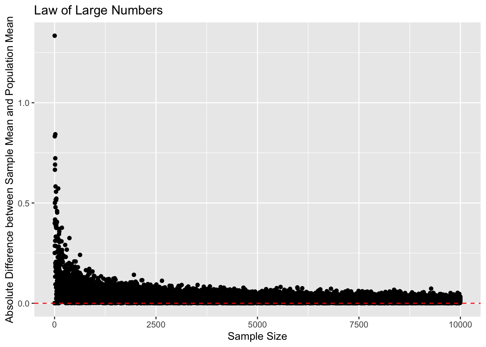

Section 6. Intro to t-tests
Introduction to t-tests
Background Information
Law of Large Numbers
Many times, we want to estimate some statistic for a population: we might want to know what the approval rating of Joe Biden is, or what the “average” ideology of the United States’ population is. Obviously, surveying every single American would be incredibly expensive, so we tend to rely on some variant of random sampling.
The Law of Large numbers gives us a useful result for random sampling: if we randomly sample from a population, as our sample size increases, the estimate of our statistic in the random sample will converge to the true population value.
Below, I have taken a hypothetical population of 1,000,000 individuals. I then randomly sampled from the population many times with different sample sizes each time. I calculated the mean of each sample and compared it to the mean of the population. We can see that the difference between the sample estimates and the true population mean decreases to 0 as the sample size increases. There’s still sampling variability, but the estimates tend to get much closer to the truth when our sample size increases.

Central Limit Theorem
We can take this a step further with the central limit theorem, which gives us a helpful result about the distribution of our sample estimates as our sample size increases. The Central Limit Theorem tells us that, as our sample size increases to infinity, the sample means will be normally distributed around the true population mean. In fact, the Central Limit Theorem tells us that \(Z = \frac{\bar{X} - \mu}{\sqrt{\sigma^2/n}} \to N(0, 1)\). In words, this means that, as our sample size increases, the difference between our sample mean and the population mean divided by the sample standard deviation over the sample size will approach a standard normal distribution (a normal distribution with mean 0 and standard deviation of 1).
We can see in the above graphic that as our sample size increases, the distribution of Z-scores starts to look a lot like the standard normal distribution.
“Confidence” Intervals
Because of the Central Limit Theorem, we know that, with large sample sizes, our sample means will be distributed approximately normally around the population mean. This allows us to calculate a measure of uncertainty around our sample estimate. We usually refer to these as 95% confidence intervals.
However, these do not mean we are 95% confident that our 95% confidence interval includes the true population mean. Instead, it means that, if we repeated the sampling process many times, about 95% of our confidence intervals would include the true population mean.
We calculate the 95% confidence interval using the following equations:
\([\bar{X} - c*SE, \bar{X} + c*SE]\)
Because of the Central Limit Theorem, we take the \(c\) value from the standard normal distribution.
We know that \(Z = \frac{\bar{X} - \mu}{\sigma/\sqrt{n}}\) is distributed approximately standard normal. We want to construct an interval such that \(-c < Z<c\) with a certain probability. We can do this by simply rearranging our Z-score:
\(\bar{X}-c*\sigma/\sqrt{n} < \mu<\bar{X}+ c*\sigma/\sqrt{n}\)
Using the properties of the standard normal distribution, we can choose c such that the probability that \(-c<Z<c\) is equal to our desired level.
For example, if we are constructing a 95% confidence interval, we want Z to be such that 0.025 of the standard normal distribution falls below the negative value and 0.025 of the standard normal distribution falls above the positive value. This is (-)1.96.
The Standard Error is the standard deviation divided by the square root of the sample size. \(SE = \sqrt{\sigma^2/n}\).
The animation below demonstrates, by sampling many times from the population and calculating the 95% confidence intervals for each sample, that about 95% of our confidence intervals contain the true population value.
T-Tests
The T-Distribution
The Central Limit Theorem is helpful but since we do not actually know the true population variance, we have to estimate it using the sample.
The t-distribution helps account for this extra uncertainty caused by estimating the standard deviation. The t-distribution has thicker tails than the normal distribution with smaller sample sizes. The t-distribution is the same thing as the normal distribution when the sample size gets larger.

Hypothesis Testing
Often, we start with a hypothesis about the relationships we should see in the data. For example, we might hypothesize that the income of men is higher than that of women, or that more Americans are liberal than conservative on policy issues. We also, often implicitly, assume a null hypothesis (\(H_0\)) of no difference or no such relationship in our data. Because of the Central Limit Theorem, we are able to test the null hypothesis.
Our hypotheses can be one-sided or two-sided. One-sided hypotheses take the form of greater than or less than. Two-sided hypotheses just assume that the population parameter is not equal to the null value (there is no directionality).
An Example
First, our hypotheses:
\(H_0\): Democratic candidates raised $500,000 in 2020.
\(H_A\): Democratic candidates did not raise $500,000 in 2020.
Under the Central Limit Theorem, we know that the Z-Score will be distributed approximately standard normal if our sample size is large enough. The null hypothesis usually assumes that our population statistic is 0. So, under the assumption that this population statistic is equal to 0, we are able to test whether it is likely or unlikely that we would observe a sample estimate as large or larger in magnitude as that which we actually observe if our null hypothesis were true.
Is \(Z = \frac{\bar{X}-0}{\sigma/\sqrt{n}}\) “large” if the true population value is 0?
Because the Z score is distributed standard normally if the null hypothesis is true, we can calculate the probability of observing a Z score at least as large in magnitude as the one we actually observe if the null hypothesis is true. This is known as the p-value.
# subset the data to Democrats only
dem <- house %>% filter(party=="DEM")
# calculate the Z-score
z <- (mean(dem$receipts) - 500000)/(sd(dem$receipts)/nrow(dem))
#calculate the p-value based on the Z-score using the Central Limit Theorem
(1-pnorm(z, mean = 0, sd = 1))*2[1] 0# Alternatively, we can just use the t.test() function
t.test(dem$receipts, mu = 500000, alternative = "two.sided")
One Sample t-test
data: dem$receipts
t = 11.51, df = 377, p-value < 2.2e-16
alternative hypothesis: true mean is not equal to 5e+05
95 percent confidence interval:
1932662 2522984
sample estimates:
mean of x
2227823 Another Example
\(H_0\): There was no difference in the amount of money raised by incumbents and challengers in 2020.
\(H_A\): Incumbents raised more than challengers in 2020.
To test this hypothesis, we calculate the t-statistic:
\(t = \frac{\bar{X}_1 - \bar{X}_2 - 0}{\sqrt{\sigma^2_1/n_1 + \sigma^2_2/n_2}}\)
We then take the t-distribution corresponding to the degrees of freedom for our samples:
\(\frac{(n_1 - 1)(n_2-1)}{(n_2-1)*\frac{\sigma^2_1/n_1}{\sigma^2_1/n_1 + \sigma^2_2/n_2} + (n_1-1)*(1 - \frac{\sigma_1^2/n_1}{\sigma^2_1/n_1 + \sigma^2_2/n_2})^2}\)
# subset the data to the incumbents and challengers
inc <- house %>% filter(incumbent_challenge_full=="Incumbent")
chall <- house %>% filter(incumbent_challenge_full=="Challenger")
# Calculate the t-statistic
t_stat <- (mean(inc$receipts) - mean(chall$receipts))/
sqrt(var(inc$receipts)/nrow(inc) + var(chall$receipts)/nrow(chall))
t_stat[1] 6.614422# calculate the degrees of freedom for the t-distribution
ninc <- nrow(inc) - 1
nchall <- nrow(chall) - 1
c <- (var(inc$receipts)/nrow(inc))/(var(inc$receipts)/nrow(inc) +
var(chall$receipts)/nrow(chall))
t_df <- ninc*nchall/(nchall*c^2 + (1-c)^2*ninc)
# calculate the p-value for the t-distribution
1-pt(t_stat, t_df)[1] 4.578182e-11# Alternatively, we can just use the t.test() function
t.test(inc$receipts, chall$receipts, alternative = "greater")
Welch Two Sample t-test
data: inc$receipts and chall$receipts
t = 6.6144, df = 528.33, p-value = 4.578e-11
alternative hypothesis: true difference in means is greater than 0
95 percent confidence interval:
1209935 Inf
sample estimates:
mean of x mean of y
2914964 1303622